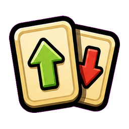
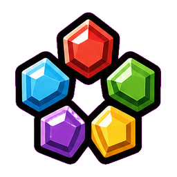
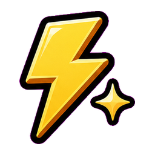
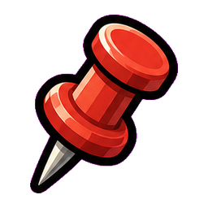
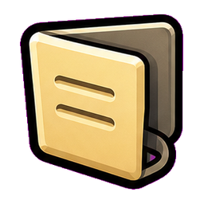

Implementation tracker
Build it in order.
Each checkbox is a real implementation step. When a step ships, this page should be updated with that checkbox checked.
Icon Drafts
Favorites

Sort
Skills
ReadyModule Menu

Pin
CollapseMove To Top
Future
Main Checklist
-
Generate first-pass UI icons.Created transparent PNG drafts for Favorites, Sort, Skills, Ready, Module Menu, Pin, Collapse, Move To Top, and Future.Done: icon drafts are shown above and saved in
docs/assets/ui-navigation-icons/. -
Find the shared module render paths.Identify every place modules are built, including skill detail pages, fishing area modules, passive/collect modules, and any special event modules.
-
Define stable module keys.Create a consistent key format for pin, favorite, collapse, and sort state. Do not use display names as IDs.
-
Add save data for module UI preferences.Store pinned modules, favorites, collapsed modules, and sort mode separately from activity progress.
-
Add one module menu button to every module.Use the same corner and same visual style everywhere. The button opens actions for that module.
-
Build the module dropdown.The dropdown must include Pin, Favorite, and Collapse. It should close cleanly after selection or outside tap.
-
Implement Pin.Pinned modules move to the top of the current page. Pinned modules keep their normal behavior.
-
Implement Favorite.Favorited modules are added to the Favorites view and can be removed from the same menu.
-
Implement Collapse.Collapsed modules shrink to a compact row but remain visible and expandable.
-
Add the bottom dock above global chat.Dock buttons: Favorites, Sort, Skills, Ready. Use dark readable text on light buttons.
-
Add safe bottom spacing to scroll pages.At max scroll, the final module must not be hidden behind the dock or chat strip.
-
Build the Favorites view.Favorites opens from the dock. Pressing Favorites again exits the view.
-
Build the Sort menu.Sort modes: level order and module type. Pinned modules stay above sorted modules.
-
Move Skills navigation into the dock.The Skills button returns to the skill hub from skill pages.
-
Build the Ready button behavior.Ready jumps to the active action first, then reward-ready modules, then newly important modules.
-
Define the skill page neighbor order.Use a single ring order for page switching so every page has a previous and next destination.
-
Add page switch module to skill pages.The final module on each skill page has two destination-colored buttons.
-
Block accidental input behind dock menus.Dock taps, dropdown taps, and menu taps must not start swipes or press modules underneath.
-
Refresh visual states after changes.Pin, favorite, collapse, sort, and favorites mode should redraw immediately without needing a full restart.
-
Run project validation.Use
.\scripts\check-project.ps1and follow Godot process safety rules. -
Manual layout pass on a long page.Inspect a long skill page at max scroll and confirm the bottom module, dock, and chat do not overlap.
-
Manual layout pass on a short page.Confirm the dock still sits naturally above chat when there is not much page content.
-
Update this checklist.Check off every completed item and add notes for anything deferred.